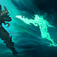

Q
BONE SKEWER
Pyke buď probodne nepřítele před sebou, nebo si ho k sobě přitáhne.

W
GHOSTWATER DIVE
Pyke získá kamufláž a výrazný bonus k rychlosti pohybu, který postupně mizí.

E
PHANTOM UNDERTOW
Pyke popoběhne vpřed a zanechá za sebou přízrak, který se k němu vrátí a omráčí všechny nepřátelské šampiony, jimiž při tom projde.

R
DEATH FROM BELOW
Pyke skočí k nepřátelům s nízkým zdravím a popraví je, čímž bude moci toto kouzlo použít znovu. Spojenci, který si připsal asistenci, poskytne dodatečné zlaťáky.